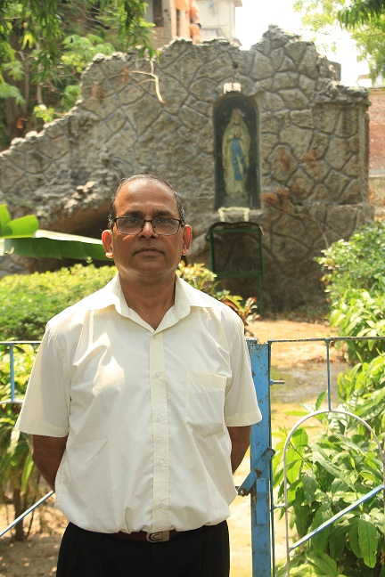

COMMUNITY LEADER'S MESSAGE
Congratulations to the editorial team of St. Mary's School for compiling the first ever digital magazine "Glimpses". A school magazine showcases the important events and highlights the various activities of the year gone by. "Glimpses" does indeed serve like a yearbook for the students and reflects the achievements and successes of the school in the academic year 2017-2018.
My heartfelt congratulations to all the members of the Editorial Board for giving us a 'glimpse' of all the wonderful things that happened within the calendar year of the school. It also covers the journey of the school from its humble beginnings at Murgihatta in 1848 (from where it was transferred to its present location in DumDum in 1947) ,to the present times.
From an institution catering to underprivileged, marginalised boys, St Mary's school has come a long way to being a full-fledged Day School for students in regular mainstream education. Traditionally known as a male bastion, the school now caters to a wider section of students and is open to girls at the Higher Secondary level. It also prides itself on its Mary Rice Centre catering to children with special needs and NIOS class XI & XII which cater to those students who wish to follow alternative schemes of education to prepare themselves for vocation based, job oriented courses. St Mary's has always boasted of a long tradition of dedicated service to society, upholding the legacy of Giving, in the true spirit of a Christian Brother school.
While it is good to look back with joy and satisfaction, we do have to focus on what is coming next. It is the youth of today who hold the key to tomorrow.While the past gives us a sense of where we are going,it is not always an indication of continuing in the same direction or pace.The world scenario is changing very fast.What is relevant today is often redundant in a very short time.Knowledge,technology,communication etc is expanding exponentially.We cannot predict what the world will look like in a couple of years.Hence it is very important not only to have knowledge but also wisdom to choose where we wish to go. We need to think differently and as the saying goes,think out of the box,if we are to survive in today's survival of the fittest. We have to give them every opportunity to adapt to changes and grow. We have to open new doors to new ideas and adapt constantly to the shifting sands of change without being overwhelmed or being swept off our feet.We need to be constantly alert and carve out new ways of looking at things.The future is uncertain. But we have to carry on experimenting and exploring and continuously seek to expand our horizon. Sometimes we are not able to see the bigger picture but God works in mysterious ways and will see us through in all our trials and endeavours.Through it all,we need to have our feet firmly `planted on basic values and a new spirituality which will help us to keep the balance amidst all the changes that is happening around us.
I wish the school every success as it continues on its path of Presence, Compassion and Liberation as envisioned by Blessed Edmund Rice.
God Bless ,
Brother Sabino Dsouza